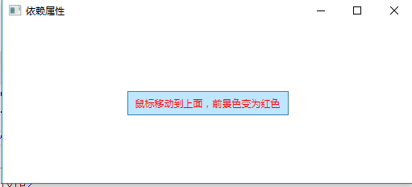

一、什么是依赖属性
依赖属性就是一种自己可以没有值，并且可以通过绑定从其他数据源获取值。依赖属性可支持WPF中的样式设置、数据绑定、继承、动画及默认值。
将所有的属性都设置为依赖属性并不总是正确的解决方案，具体取决于其应用场景。有时，使用私有字段实现属性的典型方法便能满足要求。MSDN中给出了下面几种应用依赖属性的场景：
希望可在样式中设置属性。
希望属性支持数据绑定。
希望可使用动态资源引用设置属性。
希望从元素树中的父元素自动继承属性值。
希望属性可进行动画处理。
希望属性系统在属性系统、环境或用户执行的操作或者读取并使用样式更改了属性以前的值时报告。
希望使用已建立的、WPF 进程也使用的元数据约定，例如报告更改属性值时是否要求布局系统重新编写元素的可视化对象。
二、依赖属性的特点
1、属性变更通知
无论什么时候，只要依赖属性的值发生改变，wpf就会自动根据属性的元数据触发一系列的动作，这些动作可以重新呈现UI元素，也可以更新当前的布局，刷新数据绑定等等，这种变更的通知最有趣的特点之一就是属性触发器，它可以在属性值改变的时候，执行一系列自定义的动作，而不需要更改任何其他的代码来实现。通过下面的示例来演示属性变更通知
示例：当鼠标移动到Button按钮上面时，文字的前景色变为红色，离开时变为默认颜色黑色，采用传统方式和依赖属性两种方式实现：
（1）、使用传统方式实现，在Button按钮上定义MouseEnter和MouseLeave两个事件，分别处理鼠标移动到按钮上面和离开，XAML界面代码：
1 | <Window x:Class="WpfDemo.MainWindow" |
c# 后台代码：
1 | using System; |
（2）使用依赖属性实现，XAML界面代码：
1 | <Window x:Class="WpfDemo.MainWindow" |
使用上面的两种方式都可以实现Button按钮的前景色改变，效果如下：
